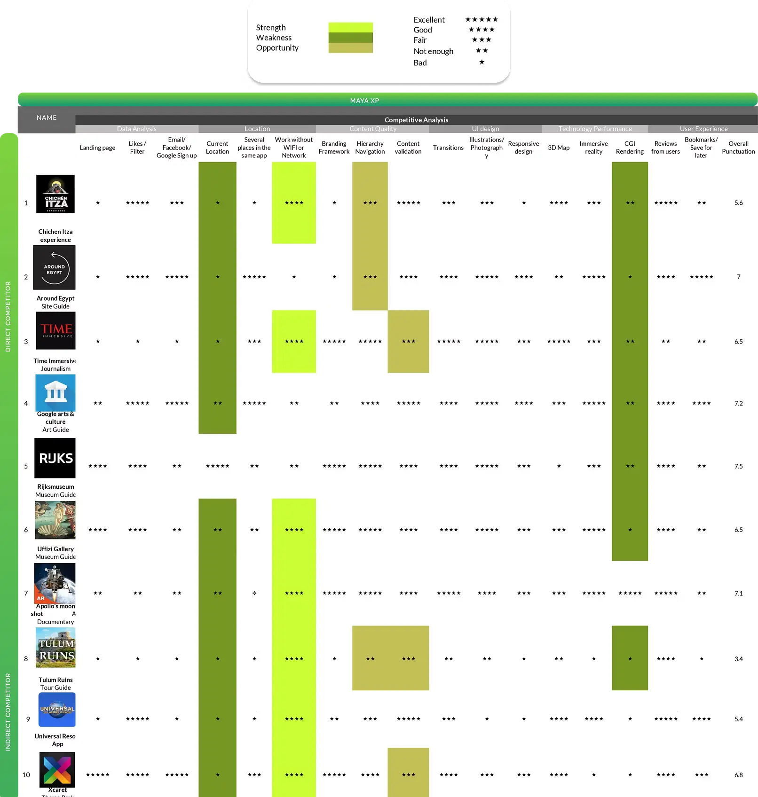
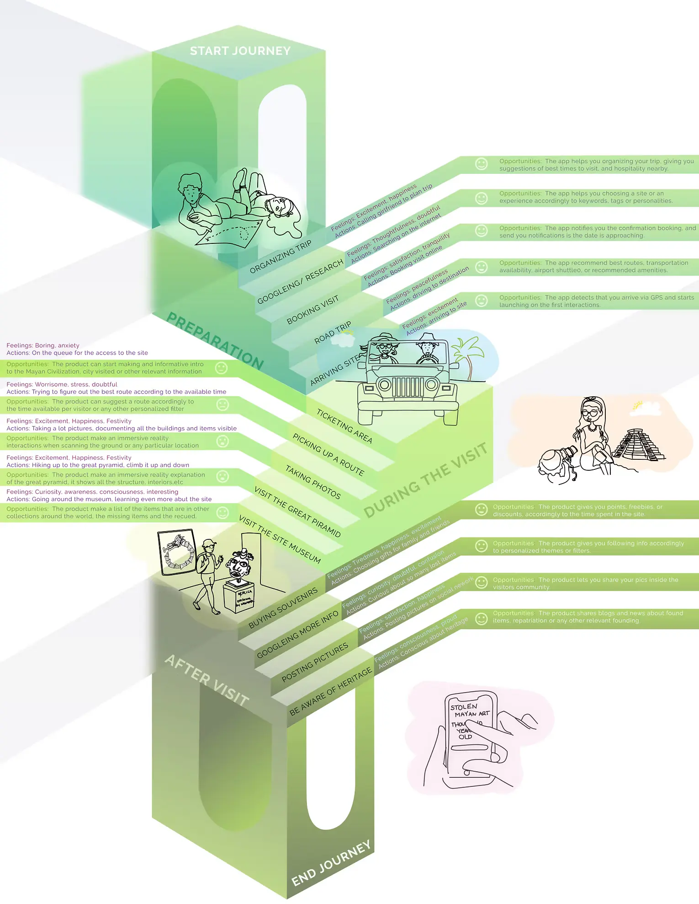
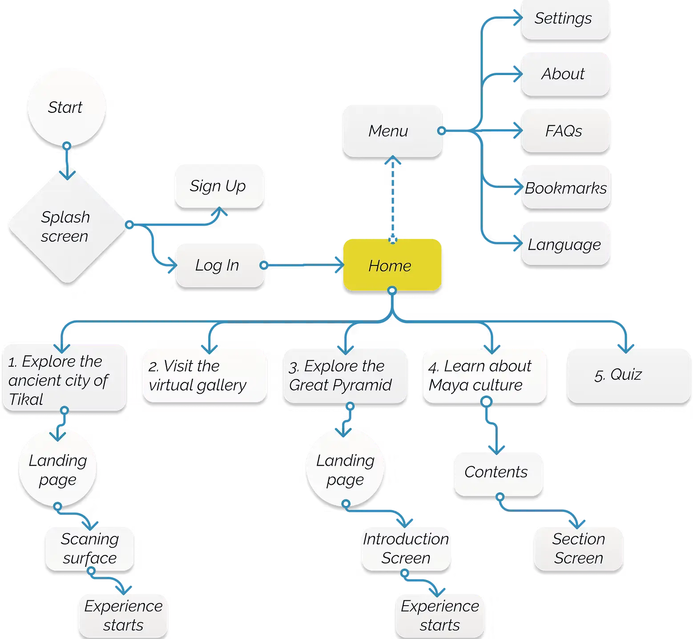
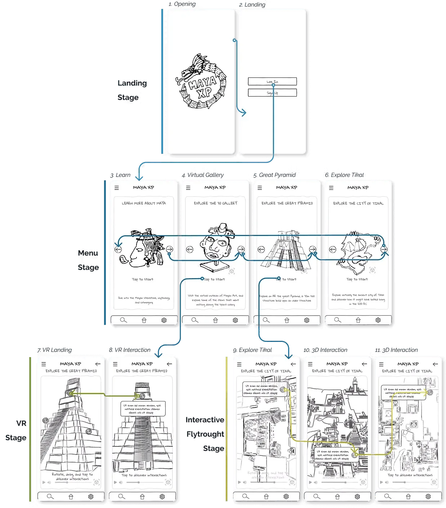
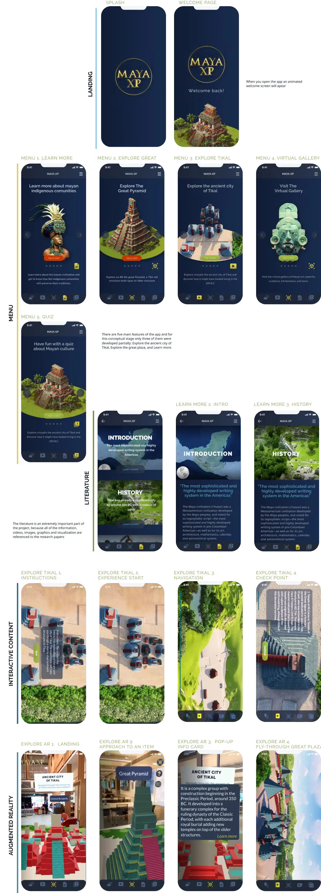
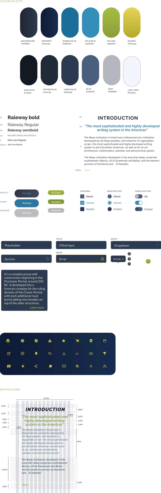

What Designing an AR App for a 2,000-Year-Old Civilisation Taught Me About Spatial UX
There's a specific kind of frustration that happens when you're standing in front of something extraordinary and you can't make sense of it.
Imagine arriving at Tikal, one of the most significant Mayan archaeological sites in the world, deep inside a Guatemalan rainforest, after weeks of anticipation. You walk through the entrance. And then you're faced with... rocks. Partially ruined structures, weathered stone, a few plaques with vague descriptions. Without a background in archaeology or ancient history, the grandeur of what you're looking at is invisible. The site doesn't speak for itself. And there's no digital tool in existence that can make it speak.
That gap is what became Maya XP.
The Problem
As part of my Masters capstone, I set out to design an interactive, immersive mobile AR app that could give anyone: a student, a tourist, a curious person on the other side of the world, a meaningful way to experience the Mayan civilisation. Not just read about it. Experience it.
The research phase made the scope clear quickly. Ten competitor apps were analysed, spanning AR experiences, museum apps, and educational tools. None of them came close to doing this well. The information existed; archaeologists have produced extensive documentation of Mayan sites, their urban planning, their architecture, their art. But no single product had brought it together into something accessible, immersive, and emotionally resonant.

The design problem wasn't a lack of content. It was a lack of translation.
Two Users Who Shaped Everything
Rather than design for an abstract audience, I built the personas around two very specific scenarios, scenarios that grounded every subsequent design decision in real, human frustration.
Ajay is travelling through Latin America for two months. By the time he reaches Tikal, he's read a book about Mayan civilisation on the plane and is genuinely excited. He enters the site and immediately feels lost. The partially destroyed temples mean nothing to him without context. He can sense the scale of what he's looking at, but he can't access it. He leaves feeling like he missed something significant.
Francisco and Danielle are on a road trip to Tulum. They visit the site spontaneously, explore without a map, miss hidden sections that were closed for restoration, and only discover at the on-site museum that artefacts they'd walked past were removed to foreign collections over a century ago. By the time they learn this, they're hungry and need to leave. The moment is gone.

Both scenarios pointed to the same underlying failures: no guidance, no context, no way to know what you were missing, and no connection between the physical site and the broader story of what happened to it.
What the App Actually Needed to Do
From those scenarios, three core product directions emerged:
Virtual site reconstruction. The Mayan cities were once painted in vivid colours, precisely oriented to astronomical positions, and filled with detail that has since eroded or been lost. AR could overlay what they looked like at their peak onto what remains today, giving users a layered view of past and present simultaneously.
Interactive 3D artefact exploration. Many of the most significant Mayan artefacts have been removed from their original locations and now sit in museums across Europe and North America. The app needed to let users encounter these objects, rotating, zooming, even virtually handling them, and understand the context of where they came from and where they are now.
Repatriation mapping. This became one of the most unexpected and meaningful features of the project. A map layer tracking displaced artefacts, connecting their original locations to their current homes across the world, and inviting users to engage with the ongoing conversation about cultural repatriation. Design can carry ethical weight when it's given the space to.


The Design and Build
The full production process ran across four months: two months of research and concept development, followed by three months of design and build, then testing and refinement.
The 3D reconstruction work was done in Blender: modelling, rigging, and animating structures based on archaeological research, including a collaboration with Massimo Stefani, a researcher and lecturer at Mexico's National University, who contributed a Collada file model of Tikal's central nucleus. Getting the historical accuracy right mattered: which colours the Mayans used, what plasters they applied to their buildings, how the sites were oriented relative to celestial events.
The AR interaction patterns were designed from scratch; there wasn't an established playbook for this type of spatial educational experience. How do you gesture through a 2,000-year-old pyramid? How does a user know what's interactive and what isn't? How do you handle the transition between the real physical environment and the virtual overlay? These were genuinely new problems to solve, and solving them taught me more about spatial UX than any tutorial could.

[Image: AR mocking ]
The design system was built in Figma, covering the full visual language of the app: typography, colour, iconography, component states, and interaction patterns across both 2D navigation and AR environments. Keeping consistency between the standard app UI and the spatial AR layer required treating them as one coherent system rather than two separate surfaces.

What I Learned
Designing for spatial and AR environments forces a kind of design thinking that flat-screen products don't require. You can't rely on proximity, hierarchy, or familiar navigation patterns in the same way. Context changes constantly; the user is moving, the environment is changing, the physical and virtual are overlapping. Every interaction has to be legible in conditions you can't fully control.
The repatriation thread also stayed with me. What started as a feature idea became one of the most emotionally resonant parts of the project: the idea that a design product could make someone care about where a 1,400-year-old jade mask ended up, and why it matters. That's a kind of impact most digital products never get near.
Maya XP remains a prototype. There are two clear directions it could grow: deeper into the educational and curatorial pathway, in partnership with archaeological institutions and universities; or further into the social and political, becoming a tool for the broader conversation about cultural heritage and repatriation. Both feel worth pursuing.
For now it stands as one of the most personally meaningful things I've designed, and the project that pushed me furthest into territory I'd never worked in before.
Tools used: Blender · Lumion · Figma · After Effects · Illustrator Skills: UX research · Spatial interaction design · 3D modelling · 3D animation · AR/VR mocking · Design systems · Wireframing · High-fidelity prototype
- date published
- 15 May 2026
- reading time
- 10 min read